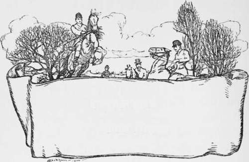

The Art Itself. Part 10
Description
This section is from the book "Hunting: A Manual of Fox, Hare, Stag & Otter Hunting", by J. Otho Paget. Also available from Amazon: Hunting: A Manual of Fox, Hare, Stag & Otter Hunting.
The Art Itself. Part 10
As i have said, with a failing scent and a fox only ' half-beat,' a huntsman must exercise all his science and skill to achieve the desired end. He must press hounds on without lifting them, never taking them off their noses, and yet never suffering them to dwell more than a moment in one spot. He must, as it were, feel his way forward, never losing a second and yet never hurrying. Hounds that are allowed to potter about in one place get into a slow habit of hunting, and are almost useless, unless they see the error of their ways. When there is a very good scent, a pack of beagles or harriers will run and drive in the very best style, but it is the principal virtue and predominant characteristic of the well-bred foxhound, to get forward with and make the most of an indifferent scent. The beagle would probably beat the foxhound at puzzling out a cold line, and if that is what you want to see, I advise you to get a pack of the former to hunt your foxes. You would not kill many, but you would get plenty of hunting, and you would seldom require to draw more than one covert in the day. The art of pressing hounds on and getting them forward without letting them lift their noses from the ground, can only be learned by those who are born with the hunting instinct, but even then it will be no use to them unless they have developed the power by careful training and varied experience.
Halloas are snares and pitfalls to deceive the unwary huntsman. There is always the probability it is a fresh fox; it may be a boy scaring crows, and very often it is nothing at all. When you make up your mind to go to a halloa, go at once, and get there as quick as you can, but when you are in doubt send your whip on. Of course, a halloa is very useful sometimes, and when it comes at the right moment it may help you to kill your fox, but generally it is not to be depended upon.
If through ill-luck, bad scenting-days, or other causes, it happens that your hounds are out of blood, you must go out every day with the full intention of persevering until you achieve success You will have to work harder than the pack, who in all probability will at the critical moment show signs of throwing up the sponge. You will want to curse them, but you must keep your temper, and with persistent perseverance hold them to the line. Over plough, cattle-stained ground, and ground covered with manure, you should hold hounds forward and not lift them, doing it in such a way that they do not realise they are obeying your will, and only think they are following up their own cast. In this way you will get them on to clean ground, feeling for the scent as they go, and giving you little hints now and .then as to the direction of the line.
When your fox is quite ' beat,' leave your hounds alone altogether, as there is very little scent at that time, and he may lie down or hide anywhere. At this period of the run you must never get your hounds' heads up, unless you can make certain of giving them a view.

Continue to: